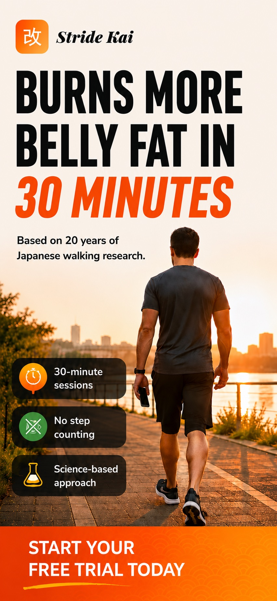
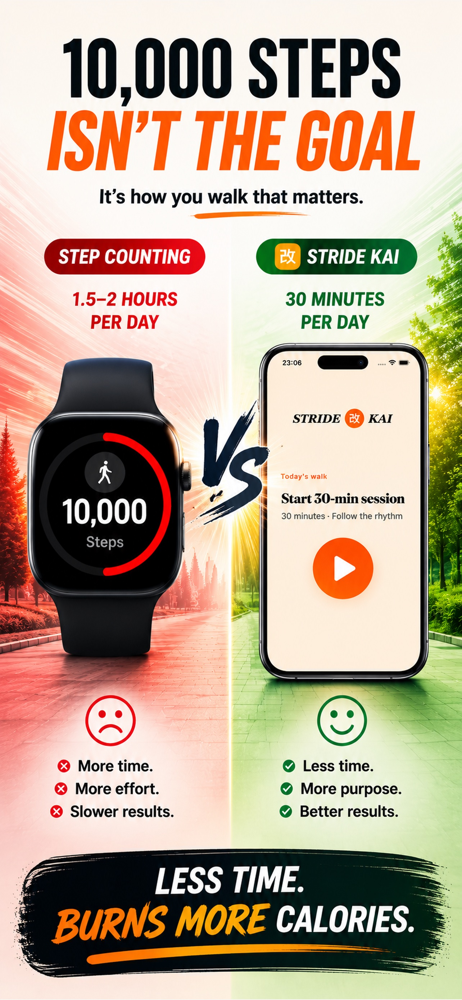
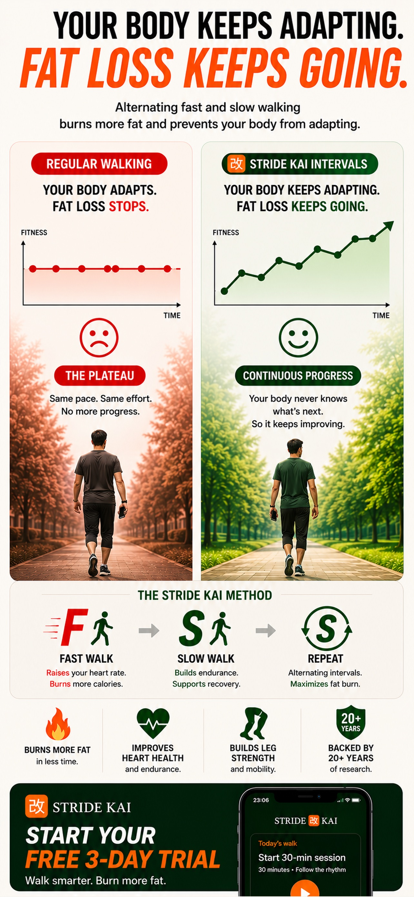
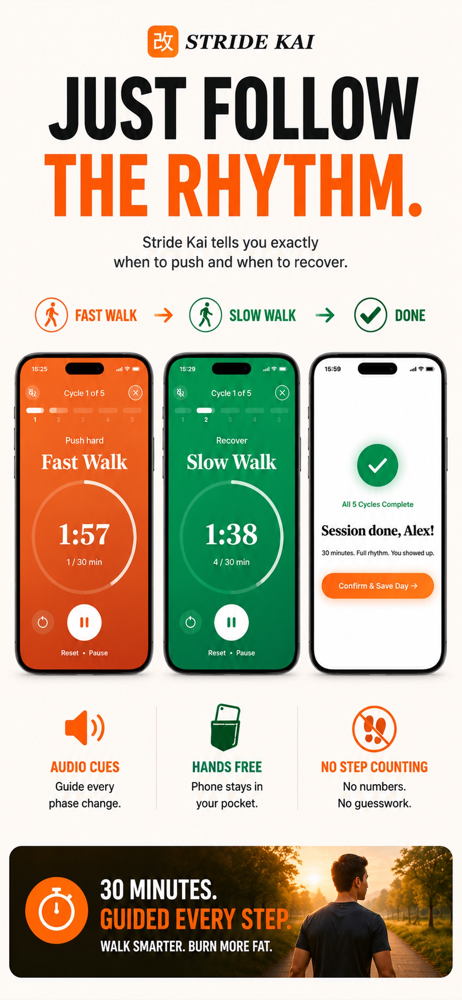
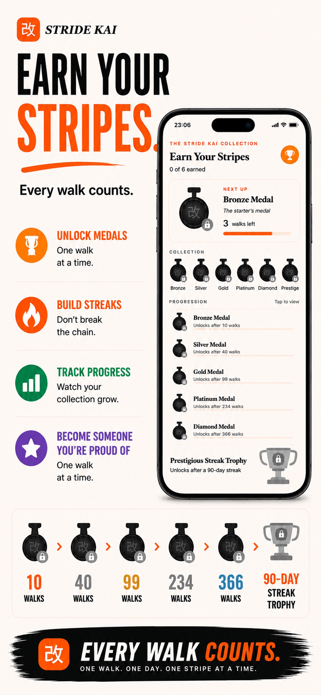

If you use any type of step counter to track your daily steps, whether it's a smartwatch, pedometer, or mobile app, and you still wake up every morning, look in the mirror and notice your midsection still looking and feeling larger than you'd like, you're not alone.
Or perhaps you put on your clothes and notice they still feel tight around the waist. Maybe you've stepped on the scale expecting progress, only to find you're not losing as much weight as you thought you should be.
If any of this sounds familiar, it's not entirely your fault.
Your step counter is trying to make you feel good by telling you that you are being active and that you should be losing weight. But in reality, it's just not telling you the whole truth.
Step counting barely burns fat.
Let's face it, we can all agree your step counter cannot tell the difference between you walking to the fridge for food, walking to the bathroom, or actually out for a proper walk. It counts all of your steps the same.
A step counter on your phone counts phone movements, which is just as bad. And if you're wearing a smartwatch, constantly having to charge it is frustrating enough on its own.
Most people are trying to hit 10,000 steps a day to lose weight, which actually takes around one and a half hours of continuous walking every single day.
And even if you do manage to hit this number consistently, your body adapts within weeks and starts burning less than you think.
There is a much smarter way to burn fat, based on 20 years of Japanese science and research. And best of all, it only takes 30 minutes a day.
The Walking Method That Burns More Fat in 30 Minutes Than 10,000 Steps Ever Could...
16 full days of your life, every single year,
spent on a method invented to sell a gadget.
Every week you wait costs you 7.5 hours and zero results. The trial is free. The clock is not.
"You were sold a marketing number invented to sell a gadget. You showed up every day. You deserved better than that."
Free 7-day trial. No commitment. Cancel anytime.
Try Stride Kai free now16 full days of your life, every year, spent on a method invented to sell a gadget.
Every week you wait costs you 7.5 hours and zero results. The trial is free. The clock is not.
"You showed up every day. You deserved better than that."
Try Free NowLike how your waist is looking? Keep it.
Don't? Cancel in 30 seconds.
No call needed, no email, no retention agent talking you out of it. Cancel anytime in your Apple or Google Play account.
Takes less than 30 seconds to cancel. You pay nothing. We keep nothing.
The more walks you complete, the more your belly and waist transforms, along with the medals you earn to prove to yourself that you did it.
Before you start
See exactly how it works. ↓ The proof, the science, the app.
See exactly how it works
Why 30 minutes outperforms 10,000 steps, and what it actually looks like when you press start.

The promise
Why it works
The science
Inside the app
The reward systemThe man who solved it
At Shinshu University in Japan, Dr. Hiroshi Nose discovered that alternating fast and slow walking at exact intervals forces your body into a fat-burning state it simply cannot reach through steady plodding. 30 minutes. No gym. No equipment. No step counting.
The method itself
Dr. Nose's research identified a specific rhythm of fast and slow walking, at a precise duration, repeated a specific number of times, that keeps your body in a fat-burning state for the full session and beyond. Stride Kai has that built in. You just press start.
Walk fast at the intensity Dr. Nose's research identified as the fat-burning threshold. Hard enough to matter. Sustainable enough to repeat.
Slowing right down isn't rest. It's when your body shifts into peak fat oxidation. The slow walk is doing more than the fast one.
The number of cycles isn't arbitrary. It's the specific count that fills 30 minutes and produces the results the research showed. Stride Kai handles it. You just walk.
Every session adds to your streak. Bronze, Silver, Gold, Platinum, Diamond. Not a participation trophy. Proof of the person you are becoming.
Try Stride Kai free for 7 days on the annual plan.
No charge until your trial ends. Cancel any time.
Everything inside Stride Kai
Your phone stays in your pocket the entire session. Stride Kai tells you exactly when to push and when to recover, no screen watching required.
Every session builds your streak. Showing up feels like winning, because it is. Miss a day and you feel it. That's the point.
Five medal tiers earned through consistency, not perfection. Each one locked until you earn it. Hard evidence of the person you're becoming.
Timed to protect your streak on your busiest days. One nudge at the right moment beats ten ignored notifications.
Calendar view, total walks, longest streak. Watch your consistency become your identity, one green day at a time.
No pedometer connection. No arbitrary targets. No guilt. Finish the session and you're done. Full stop.
Kai, Improvement
The Research Behind It
Dr. Hiroshi Nose published his interval walking research after two decades of clinical study at Shinshu University in Japan. The results were replicated, peer-reviewed, and clear: alternating fast and slow walking outperforms steady-pace walking on every meaningful health marker.
Stride Kai implements his exact protocol. Same timing. Same structure. Same results, without a lab coat or a treadmill.
The 10,000 step goal was invented in 1965 by a pedometer company trying to sell more devices. It was never based on science. Sixty years later, millions of people are still paying the price.Stride Kai exists to fix that.